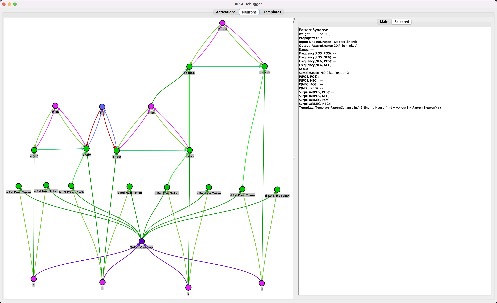

March 12, 2022
Work in progress
Usage
Maven POM
The following dependency includes the AIKA software library to an existing maven project.
<dependency>
<groupId>network.aika</groupId>
<artifactId>aika</artifactId>
<version>2.0.3-SNAPSHOT</version>
</dependency>
Artificial example with Input Tokens ABCD
Example showing three pattern neuron ensembles and a mutual exclusion circuit. The mutual exclusion circuit leads to two separate branches that are shielded from one another. The diamond shaped arrows indicate feedback synapses. When an activation is split due to branching, the branch relation is shown by the orange dashed arrow.

Template neurons and synapses are indicated by dotted lines.

@Test
public void testABCD() throws InterruptedException {
TextModel m = new TextModel();
m.init();
Templates t = m.getTemplates();
PatternNeuron a_IN = m.lookupToken("a");
PatternNeuron b_IN = m.lookupToken("b");
BindingNeuron b_PTRelBN = TextModel.getPreviousTokenRelationBindingNeuron(b_IN);
PatternNeuron c_IN = m.lookupToken("c");
BindingNeuron c_PTRelBN = TextModel.getPreviousTokenRelationBindingNeuron(c_IN);
PatternNeuron d_IN = m.lookupToken("d");
BindingNeuron d_PTRelBN = TextModel.getPreviousTokenRelationBindingNeuron(d_IN);
// Pattern ab
BindingNeuron a_abBN = createNeuron(t.BINDING_TEMPLATE, "a (ab)");
BindingNeuron b_abBN = createNeuron(t.BINDING_TEMPLATE, "b (ab)");
createSynapse(t.RELATED_INPUT_SYNAPSE_TEMPLATE, b_PTRelBN, b_abBN, 10.0);
createSynapse(t.SAME_PATTERN_SYNAPSE_TEMPLATE, a_abBN, b_abBN, 10.0);
createSynapse(t.PRIMARY_INPUT_SYNAPSE_FROM_PATTERN_TEMPLATE, a_IN, a_abBN, 10.0);
updateBias(a_abBN, 2.5);
createSynapse(t.PRIMARY_INPUT_SYNAPSE_FROM_PATTERN_TEMPLATE, b_IN, b_abBN, 10.0);
PatternNeuron abPattern = initPatternLoop(t, "ab", a_abBN, b_abBN);
updateBias(abPattern, 3.0);
// Pattern bc
BindingNeuron b_bcBN = createNeuron(t.BINDING_TEMPLATE, "b (bc)");
BindingNeuron c_bcBN = createNeuron(t.BINDING_TEMPLATE, "c (bc)");
createSynapse(t.RELATED_INPUT_SYNAPSE_TEMPLATE, c_PTRelBN, c_bcBN, 10.0);
createSynapse(t.SAME_PATTERN_SYNAPSE_TEMPLATE, b_bcBN, c_bcBN, 10.0);
createSynapse(t.PRIMARY_INPUT_SYNAPSE_FROM_PATTERN_TEMPLATE, b_IN, b_bcBN, 10.0);
initInhibitoryLoop(t, "b", b_abBN, b_bcBN);
updateBias(b_abBN, 3.0);
updateBias(b_bcBN, 2.5);
createSynapse(t.PRIMARY_INPUT_SYNAPSE_FROM_PATTERN_TEMPLATE, c_IN, c_bcBN, 10.0);
updateBias(c_bcBN, 3.0);
PatternNeuron bcPattern = initPatternLoop(t, "bc", b_bcBN, c_bcBN);
updateBias(bcPattern, 3.0);
// Pattern bcd
BindingNeuron bc_bcdBN = createNeuron(t.BINDING_TEMPLATE, "bc (bcd)");
BindingNeuron d_bcdBN = createNeuron(t.BINDING_TEMPLATE, "d (bcd)");
createSynapse(t.RELATED_INPUT_SYNAPSE_TEMPLATE, c_bcBN, bc_bcdBN, 10.0);
createSynapse(t.RELATED_INPUT_SYNAPSE_TEMPLATE, d_PTRelBN, d_bcdBN, 10.0);
createSynapse(t.SAME_PATTERN_SYNAPSE_TEMPLATE, bc_bcdBN, d_bcdBN, 10.0);
createSynapse(t.PRIMARY_INPUT_SYNAPSE_FROM_PATTERN_TEMPLATE, bcPattern, bc_bcdBN, 10.0);
updateBias(bc_bcdBN, 2.5);
createSynapse(t.PRIMARY_INPUT_SYNAPSE_FROM_PATTERN_TEMPLATE, d_IN, d_bcdBN, 10.0);
updateBias(d_bcdBN, 3.0);
PatternNeuron bcdPattern = initPatternLoop(t, "bcd", bc_bcdBN, d_bcdBN);
updateBias(bcdPattern, 3.0);
Document doc = new Document(m, "abcd");
Config c = getConfig()
.setAlpha(0.99)
.setLearnRate(-0.011)
.setInductionThreshold(0.1)
.setTrainingEnabled(true)
.setTemplatesEnabled(true);
doc.setConfig(c);
AIKADebugger debugger = AIKADebugger.createAndShowGUI(doc);
...
doc.processTokens(List.of("a", "b", "c", "d"));
doc.processFinalMode();
doc.postProcessing();
doc.updateModel();
}